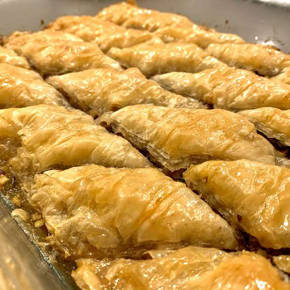

Baklava

Description
This is simple and easy. Serve it in cupcake papers. It freezes well, too.
Ingredients
- 1 pound chopped nuts
- 1 teaspoon ground cinnamon
- 1 (16 ounce) package phyllo dough
- 1 cup butter, melted
- 1 cup white sugar
- 1 cup water
- ½ cup honey
- 1 teaspoon vanilla extract
- 1 teaspoon grated lemon zest
Steps
-
Preheat oven to 350 degrees F (175 degrees C).
Butter a 9x13 inch baking dish.
-
Toss together cinnamon and nuts. Unroll phyllo
and cut whole stack in half to fit the dish.
Cover phyllo with a damp cloth while assembling
the baklava, to keep it from drying out.
-
Place two sheets of phyllo in the bottom of the
prepared dish. Brush generously with butter.
Sprinkle 2 to 3 tablespoons of the nut mixture
on top. Repeat layers until all ingredients are
used, ending with about 6 sheets of phyllo.
Using a sharp knife, cut baklava (all the way
through to the bottom of the dish) into four
long rows, then (nine times) diagonally to make
36 diamond shapes.
-
Bake in preheated oven until golden brown and crisp, about 50 minutes.
-
While baklava is baking, combine sugar and water in
a small saucepan over medium heat and bring to a boil.
Stir in honey, vanilla and lemon or orange zest;
reduce heat and simmer 20 minutes.
-
Remove the baklava from the oven and immediately spoon
the syrup over it. Let cool completely before serving.
Store uncovered.